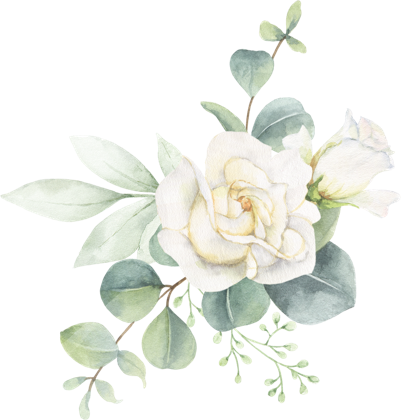

Bruna & Rodrigo
Seja nosso
fotógrafo
Hoje você vê a festa de um jeito que a gente não vai ver. Registre do seu olhar e mande pra nós.
o QR code aparece aqui
- 1aponte a câmera
- 2escolha as fotos
- 3envie
16 · 01 · 2027

Seja nosso
fotógrafo
Hoje você vê a festa de um jeito que a gente não vai ver. Registre do seu olhar e mande pra nós.
16 · 01 · 2027